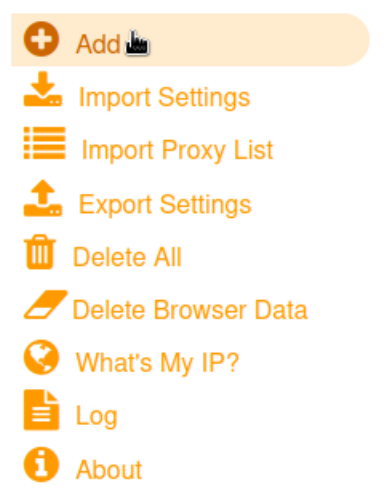
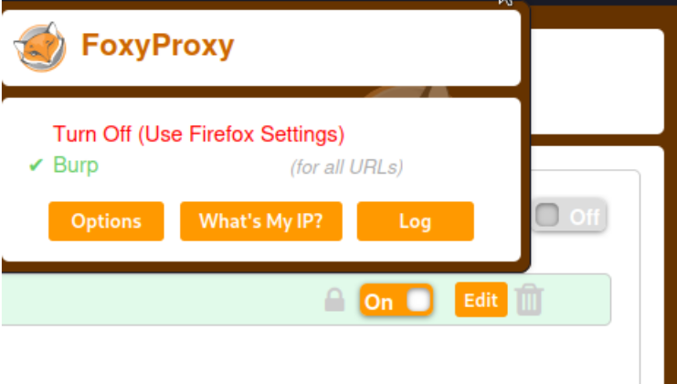
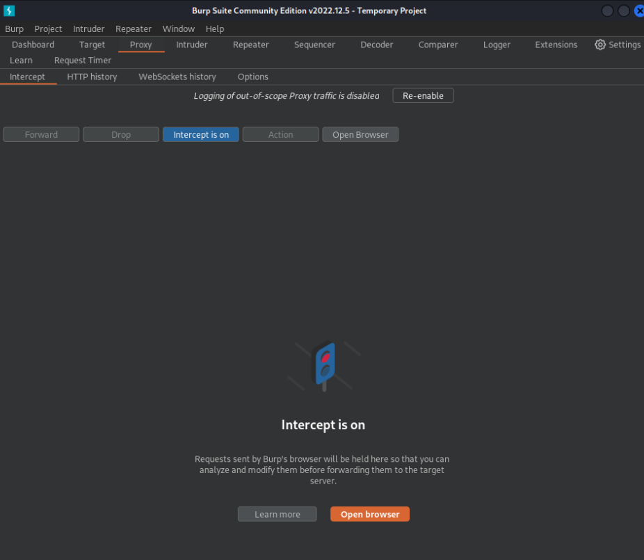
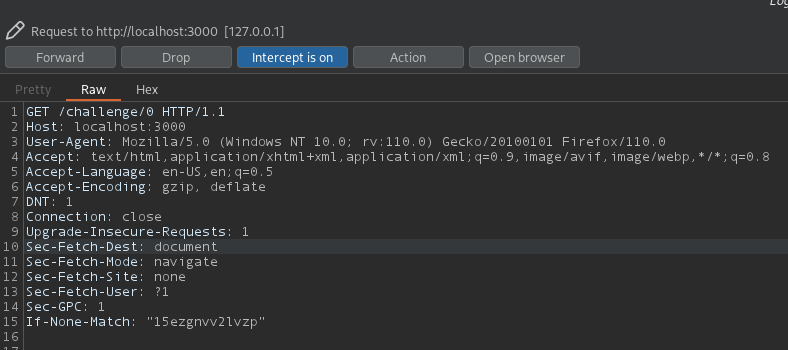
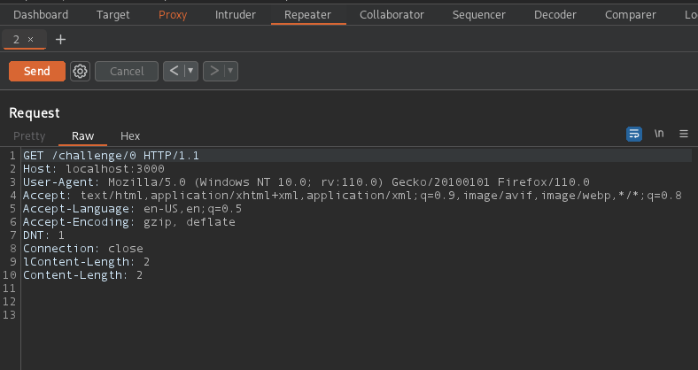

Burp Suite est un outil incontournable dans le monde du pentest, qui permet d’intercepter des requêtes HTTP et de les modifier. Dans ce cours nous allons comprendre les bases de Burp Suite : intercepteur, répéteur…
Burp Suite est un logiciel écrit en Java, il vous faut donc une version de java installée sur votre ordinateur. Il existe une version payante de Burp Suite, avec plus d’options, mais la version gratuite est amplement suffisante pour nous. Dans la suite de ce cours, nous utiliserons donc Burp Suite Community Edition. Il n’existe pas de version de Burp Suite en CLI, il n’y a que la version GUI.
Pour installer Burp Suite, vous pouvez suivre ce tutoriel détailler ou bien vous rendre sur le site officiel.
Pour la suite du tuto, vous pouvez lancer ce lab docker pour avoir accès à un site web, dans le but de pratiquer en même temps.
docker-compose up
Vous disposez maintenant d’un site web http://localhost:3000.
Pour utiliser Burp Suite comme proxy et être en mesure
d’intercepter le trafic web de votre navigateur internet, nous allons
installer une extension firefox se nommant
Foxy Proxy.

Dans les options de
Foxy Proxy, cliquez sur Add , mettez
Burp comme nom, puis 127.0.0.1 comme adresse IP
et 8080 comme port (c’est celui du proxy de Burp).
Une fois que cela est fait, vous pouvez enfin lancer Burp. Pour commencer à intercepter des requêtes, activez Foxy Proxy, et dans Burp, allez dans l’onglet Proxy et activez l’interception.
 
Maintenant, naviguez sur le site à l’adresse
http://localhost:3000/challenge/0, et retournez sur
Burp Suite. Vous observerez la requête HTTP
GET que vous venez de faire.

A partir de là, vous pouvez modifier la requête, la renvoyer, faire une
attaque par brute force…
Parfois, lorsque l’on intercepte une requête HTTP, on aimerais pouvoir la modifier en la renvoyant plusieurs fois.
C’est par exemple le cas quand on cherche à exploiter une injection SQL. Nous n’aurons jamais dès le premier essai le bon payload, nous devrons le modifier plusieurs fois, et à chaque fois on veut renvoyer la requête pour voir la réponse et améliorer notre payload.
Pour ce faire, Burp Suite met à disposition le repeater. Envoyez la requêtes précédente dans le Repeater avec un clic droit, Send to Repeater.

Vous pouvez cliquer sur Send pour envoyer une requête, et
observer le résultat sur la droite :
Tentez de trouver le flag en parcourant les pages
/challenge/:id.
Peut être à venir